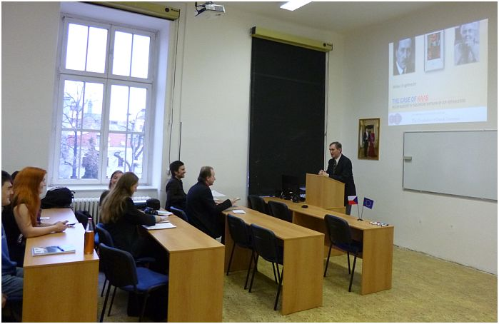

Nieuws
-
01 04 2014
Studiemiddag van de werkgroep De Stille Kracht
Op 21 maart 2014 organiseerde de De Stille Kracht-werkgroep een studiemiddag in Nijmegen, waar de leden gastvrij ontvangen werden door de Open Universiteit. De bijeenkomst begon met een inleiding door Ton van Kalmthout, waarin hij als een van de CODL-coördinatoren de infrastructurele en inhoudelijke doelstellingen van het CODL-project als geheel in herinnering bracht. Daarnaast besprak hij welke resultaten CODL in oktober 2015 geboekt moet hebben en wat er op dit moment al is gerealiseerd.
Vervolgens hield Ton als lid van de werkgroep een referaat over de edities van De Stille Kracht (1900). Zijn onderzoek naar de drukgeschiedenis van het boek van Louis Couperus leidde vooralsnog tot de volgende – voorlopige – conclusies over de receptie ervan: 1. dat het minder schandaal heeft gewekt dan wel wordt verondersteld, 2. dat het boek pas hogelijk werd gewaardeerd toen Indonesië onafhankelijk was geworden en het boek gelezen kon worden als een uitgekomen profetie én als een historische roman, en 3. dat het pas op twee late momenten de wind in de zeilen heeft gekregen: bij (de aanloop naar) de uitgave van het verzameld werk in 1953 en bij de verheffing van het boek tot een van de Nederlandse klassieken in de jaren ’60 (en dus niet zozeer dankzij de televisiebewerking in 1974).
De tweede die aan het woord kwam was Mary Kemperink . Zij hield een lezing over de bijdrage die De stille kracht leverde aan Couperus’ self-fashioning. Mary liet zien dat de roman van meet af aan heeft bijgedragen aan de beeldvorming rond de schrijver, zowel in diens eigen tijd als daarna. In Couperus’ eigen tijd onderstreepte de roman zijn renommee als schrijver van moderne, decadente, onzedelijke romans, en als dissident in de gemeenschap van Nederlandse kolonialen, die hij in De stille kracht belasterd zou hebben. Na zijn dood droeg de roman bij aan het beeld van Couperus als verlicht denker over kolonialisme en tegelijk als iemand die rasvermenging veroordeelde. Deze twee elementen bepalen tot nu toe mede het beeld dat het publiek van Couperus heeft.
Hierna presenteerden Peter Boot en Hester Meuleman hun gezamenlijke onderzoek naar de receptie van Louis Couperus op het internet. Peter zette uiteen hoe boekreacties op het internet zicht geven op receptieverschijnselen die voorheen onzichtbaar bleven. Extra interessant wordt dat wanneer internet-reviewers en webloggers zich de bemiddelende rol toe-eigenen die voorheen was weggelegd voor professionele critici. Ook De Stille Kracht is onderwerp van een aantal online-besprekingen; Peter heeft een aantal sites bekeken waarop die besprekingen zijn verschenen. Overigens denkt hij wel dat zulke sites interessanter zijn om de veranderende dynamiek van het literaire veld die eruit blijkt dan om wat er specifiek over De Stille Kracht en Couperus wordt gezegd. Misschien zou een vergelijkend onderzoek naar internet-respons op de verschillende CODL-werken verhelderend zijn.
Hester betoogde ten slotte dat de lezer de grootste en belangrijkste nieuwe speler in het literaire veld is geworden na de enorme verschuiving die het internet heeft veroorzaakt: ‘hoog’ en ‘laag’ lopen meer door elkaar en het internet zorgt deels voor een invloed van de lezer die deels interfereert met het traditionele veld en daar deels los van staat. Hertalingen, luisterboeken en besprekingen van De stille kracht op diverse internetforums zijn daar voorbeelden van. Hester houdt zich eveneens bezig met performatieve bewerkingen van De stille kracht. Die vormen een interessante casus om betekenisverschuivingen te onderzoeken die ontstaan door het bewerken van de tekst. Zo valt er een en ander te zeggen over de verschillende manieren waarop de islam wordt behandeld. Verder wil zij de praktijk van het bewerken onderzoeken door middel van een samenwerking met drie theatermakers die hopelijk elk een scène uit De stille kracht gaan bewerken en daarbij inzicht zullen geven in hun manier van werken.
Na de verschillende presentaties bespraken de aanwezigen de toekomstige activiteiten van de werkgroep, onder meer in de vorm van gezamenlijke panel-presentaties op een of meer congressen. Ook namen zij zich een sterkere internationale oriëntatie voor. De middag werd afgesloten met een gemeenschappelijke maaltijd van enkele deelnemers. -
16 03 2014
De Indische wereld van Louis Couperus
Het nieuwe themanummer van Indische Letteren gaat over De Indische wereld van Louis Couperus. De Werkgroep Indisch-Nederlandse Letterkunde organiseerde in 2013 een lezingenmiddag ter gelegenheid van het 150-jarig jubileum van Couperus’ geboorte. Het onlangs verschenen themanummer getuigt van deze succesvolle Couperus-middag en bevat bijdragen van Olf Praamstra, Jacqueline Bel, Pamela Pattynama, Petra Teunnissen-Nijsse. Uiteraard komt De stille kracht hier uitvoerig ter sprake.
-
15 03 2014
Science Guide en de Internationale Vereniging voor Neerlandistiek besteden aandacht aan CODL
Het CODL-project blijft ook niet onopgemerkt in de online wetenschappelijke domeinen. ScienceGuide, het online nieuwsmagazine over onderwijs en wetenschap en de Internationale Vereniging voor Neerlandistiek maken melding van het project op hun website. Mede dankzij deze twee media zal CODL nog meer geïnteresseerden kunnen bereiken.
Klik hier voor de link naar ScienceGuide.nl
Klik hier voor de eerste link naar de website van IVNNL
Klik hier voor de tweede link naar de website van IVNNL
-
02 03 2014
Verslag mini-workshop over Kaas in Olomouc
Op woensdag 26 februari 2014 kwamen vijf van de negen leden van de werkgroep Kaas in Olomouc bij elkaar om ’s anderendaags verschillende facetten van de receptie van Elsschots werk te bespreken. Na een smaakmakende inleiding van de Elsschot-biograaf Vic van de Reijt, Kauwen op Kaas, over leven en werk van Alfons De Ridder alias Willem Elsschot, besprak Dorien De Man in Say Cheese! Valt Elsschots humor in de smaak? de (non-)receptie van Kaas in Engelstalige gebieden.
Vic van de Reijt
Na de pauze vervolgde Michel De Dobbeleer met Het epos van onheilbrengende Edammer kaas. Over het slijten van Kaas aan de Sovjets met het wel en wee van de receptie van Elsschot en Kaas in het voormalige Sovjet-Rusland. Literair vertaalster Cora-Lisa Sütő gaf in haar Belegen kaas of jonge? Twee vertalingen van dezelfde roman een beeld van de receptie van Kaas in het Hongaars, hetgeen niet precies hetzelfde bleek te zijn als de receptie in Hongarije. Ten slotte rondde Wilken Engelbrecht in The case of Kaas. Willem Elsschot in Tsjechische vertaling en zijn vertaalsters af met een causerie over de historisch eerste vertaling van Kaas in een vreemde taal (in het Tsjechisch in 1936) en over de merkwaardige positie van Elsschot binnen Tsjechische vertalingen uit het Nederlands.

Wilken Engelbreccht aan het woord
‘s Middags bediscussieerde de groep toekomstplannen aansluitend bij het mini-colloquium. Literair vertaalster Veronika ter Harmsel-Hvlíková schoof aan en besprak met Vic van de Reijt en Wilken Engelbrecht de mogelijkheden van een nieuwe, actuele vertaling in het Tsjechisch van Kaas en eventueel ook ander werk van Elsschot. Verder ging het gesprek over een gezamenlijk artikel, eventueel meer artikelen over de receptie van Elsschot in Centraal-Europa.
Op vrijdag 28 februari bediscussieerden enkele werkgroepleden nogmaals de toekomstplannen en maakten een conceptverslag op.
De vakgroep Neerlandistiek van de Palacký Universiteit in Olomouc neemt deel aan een ESF-project “Innovatie van Culturele Studies”. Een van de kenmerken van Cultuur Studies is de ontvangst van buitenlandse literatuur in de Tsjechische context. Daarom kon de eerste sessie van de werkgroep Kaas uit dit ESF-project worden gefinancierd.
Een verslag van Wilken Engelbrecht
moderator van de CODL-werkgroep ‘Kaas’
-
18 02 2014
Nieuwe werkgroep over Minoes
CODL brengt de verspreidingsgeschiedenis van een aantal sleutelteksten uit de Nederlandstalige literatuur in kaart, waarbij de deelnemers uitgenodigd worden om ook andere geschikte casussen voor te stellen. Als resultaat daarvan is er onlangs een nieuwe werkgroep opgericht rond het werk Minoes van Annie M.G. Schmidt uit 1970. Onder de moderatie van Jan Van Coillie (HU Brussel, KU Leuven) gaat de twaalfde CODL-werkgroep de verspreidingsgeschiedenis van dit kinderboek onderzoeken. Wie hier ook aan wil deelnemen, wordt verzocht zich aan te melden via circulationofdutchliterature@gmail.com.
-
09 02 2014
Studiemiddag ‘De stille kracht van Louis Couperus’ in Nijmegen
Op 21 maart organiseert de CODL-werkgroep De Stille Kracht een studiemiddag in Nijmegen over verschillende aspecten van het lopend onderzoek van de leden.
Het programma van de presentaties ziet er als volgt uit :
14u00-14u30: Algemeen overzicht van de stand van zaken, nieuws etc.
14u30-15u00: Ton van Kalmthout (Huygens ING) over de verhouding van werkgroep tot het CODL-project en over de diverse edities van het boek15u00-15u30: Mary Kemperink (RUG Groningen) over De stille kracht en de “self-fashioning” van Couperus
15u30-16u00: Maarten Klein (v/h Radbouduniversiteit Nijmegen en Katholieke Universiteit Ljubljana) over het geloof in stille kracht
16u00-16u30: Peter Boot (Huygens ING) en Hester Meuleman (Amsterdam) over online-reacties op De stille kracht
16u30-17u00: Hester Meuleman (Amsterdam) over de praktijk van het bewerken van De stille kracht17u00-17u30: Afsluiting
Andere aanwezige werkgroepleden zijn Jacqueline Bel (VU Amsterdam) en Kim Andringa (Université de Liège).
Lokatie: Studiecentrum O.U., Erasmuslaan 9, Nijmegen (zaal nog niet bekend)
De middag is mede mogelijk gemaakt door de Open Universiteit. Voor meer informatie kunt u contact opnemen met Kim Andringa, k.andringa@ulg.ac.be.
-
21 01 2014
Studiedag ‘Elckerlijc voor iedereen’ vindt aanstaande vrijdag plaats in Leiden
Op 24 januari 2014 zal de studiedag ‘Elckerlijc voor iedereen’ plaats vinden aan de Universiteit van Leiden. De werkbijeenkomst wordt in het kader van het internationaal CODL-project georganiseerd. In de ochtend zullen de leden van de CODL Elckerlijc werkgroep elkaar vertellen over lopend onderzoek en de verdere mogelijkheden voor samenwerking bespreken. Aanwezig zijn: Geert Warnar (Universiteit Leiden), Jeannine De Landtsheer (KU Leuven), Rita Schlusemann (Carl von Ossietzky Universität Oldenburg), Bart Ramakers (Rijksuniversiteit Groningen), Malgorzata Dowlaszevicz (Universiteit Wroclaw), Elsa Strietman (University of Cambridge), María José Calvo González (Universidad Complutense de Madrid), Ulrike Wuttke (Universiteit Gent), Nick Tomberge (Universiteit Leiden), Orsi Réthelyi (ELTE Budapest).
Als afsluiting is er en publiekmiddag georganiseerd. Frits van Oostrom, Hans Croiset en René van Stipriaan zullen spreken over de vele nakomelingen van Elckerlijc in de literatuur en op het toneel. Waarom is de thematiek van Elckerlijc voortdurend populair gebleken? Waarom zien we de Elckerlijc in Nederland nooit meer op toneel terwijl de Duitse Jedermann nog jaarlijks grote galavoorstellingen kent? Deze vragen worden beantwoord met de oudste volledige versie van de Elckerlijc op tafel.
Plaats van samenkomst: Universiteitsbibliotheek Leiden, Witte Singel 27, Grote Vergaderzaal
Datum en tijd: vrijdag 24 januari 2014, 9.00 – 17.00 u.
Programma publiek deel:
15.00 u. zaal open
15.15 u. Geert Warnar: Welkom en introductie
15.30 u. Frits van Oostrom: Elckerlijc en Everyman van Philip Roth (2006)
16.15 u. René van Stipriaan en Hans Croiset: Waarom en hoe moet de Elckerlijc (weer) gespeeld worden?
17.00 u. Slot en borrel
Zie voor het volledige programma: programma (link), voor een poster klik hier. De workshop wordt georganiseerd door Geert Warnar (Universiteit Leiden) en Orsolya Réthelyi (Eötvös Loránd Universiteit Boedapest). De bijeenkomst is mede mogelijk gemaakt door het CODL fonds, het Scaliger Instituut, LUCAS (Leiden University Centre for the Arts in Society) en NLCM (Nederlandse Taal en Cultuur in de Middeleeuwen).
-
19 12 2013
Financiële steun voor de mini-workshops
Door de steun van een ruimhartige schenker is CODL vanaf 2014 in staat om voor de miniworkshops/studiebijeenkomsten van de afzonderlijke werkgroepen aanvullende financiële steun aan te bieden. De fondsen zijn beperkt, maar hopelijk gaat dit wat meer ruimte geven aan die belangrijke initiatieven. De bedoeling is dat minder draagkrachtige CODL-deelnemers die de reiskosten niet door hun werkgever kunnen laten betalen, een financiële tegemoetkoming krijgen. Alle werkgroepen worden aangemoedigd om hier gebruik van te maken!
Hoe gaat dat in zijn werk? Een werkgroep kan een aanvraag voor een tegemoetkoming in de reiskosten indienen door een voorstel voor een miniworkshop/studiebijeenkomst met een opgave van tijd en plaats, een voorlopig programma en een gespecificeerde begroting te sturen naar het projectadres. Voor ideeën en advies over de organisatie van zo’n bijeenkomst kan men ook contact opnemen met collega’s uit andere werkgroepen die al in 2013 een miniworkshop gehouden hebben of die er een voor de komende maanden gepland hebben. (Zie: http://www.codl.nl/events/upcoming/.)
-
01 12 2013
Eerste CODL-workshop, in Rome
De eerste workshop van het internationaliseringsproject Circulation of Dutch Literature (CODL) vond plaats in de Academia Belgica en het Koninklijk Nederlands Instituut in Rome (KNIR). Van de elf casusteksten die het project momenteel bestudeert, stonden er negen centraal. In totaal 31 deelnemers uit tien verschillende landen presenteerden en bespraken nieuw onderzoek naar deze Nederlandstalige werken (zie voor het programma ook: programma, link). De workshop was georganiseerd door dr. Elke Brems (KU Leuven – campus Brussel), dr. Ton van Kalmthout (Huygens Instituut voor Nederlandse Geschiedenis KNAW) en dr. Orsolya Réthelyi (Eötvös Loránd Universiteit Boedapest). Congresassistente was Katalin Márton.
Dimitri Verhulst
Met een literaire proloog voor CODL-deelnemers, relaties van Academia Belgica en KNIR en andere gasten nam het programma een aanvang op woensdagavond 20 november 2013. Hier interviewde de Italiaanse schrijver en vertaler David Santoro de in Zweden woonachtige, Vlaamse schrijver Dimitri Verhulst over diens boek Problemski Hotel, waar de auteur tevens enkele passages uit voorlas. Onder leiding van de sessievoorzitters Elke Brems, Veerle Fraeters, Jeannette Koch en Franco Paris werd het programma vervolgd op donderdag 21 en vrijdag 22 november. Voor de abstracts van de lezingen zie: Abstracts (link)
Gillis Dorleijn
Orsolya Réthelyi opende de reeks lezingen met een recapitulatie van de doelstellingen van CODL, gevolgd door vijftien beschouwingen, onder anderen van prof.dr. Gillis Dorleijn (Rijksuniversiteit Groningen) en prof.dr. Mona Baker (University of Manchester). Gillis Dorleijn deed tien aanbevelingen voor onderzoek naar culturele transfer (klik hier voor zijn handout) en Mona Baker gaf een inleiding in de narratieve theorie zoals ze die toepaste op vertalingen. Op de avond van 21 november kregen de deelnemers een receptie aangeboden door het KNIR, gevolgd door een diner in het Caffè delle Arti in de Galleria Nazionale d’Arte Moderna, waar ook vertegenwoordigers aanzaten van de Academia Belgica, de Academia d’Ungheria in Roma en het KNIR.
Mona Baker
Dimitri Verhulst liet zich opnieuw interviewen op vrijdagmorgen 22 november, nu door Orsolya Réthelyi, over de talrijke vertalingen van zijn roman De helaasheid der dingen. Vertegenwoordigers van de diverse CODL-werkgroepen sloten de ochtendsessie af met een kort verslag van de vorderingen en plannen van deze groepen, waarna zij discussieerden over gesignaleerde knelpunten en kansen voor de toekomst. De beraadslagingen brachten enkele verbeterpunten aan het licht, maar gaven over het algemeen aanleiding tot tevredenheid over de gang van zaken. Tot besluit leverde CODL-ambassadeur prof.dr. Frits van Oostrom (Universiteit Utrecht) commentaar op enkele thema’s die prominent in de bijdragen aan de workshop naar voren waren gekomen: casuïstiek en descriptie, patronen en variatie, theoretische reflectie en methodologie.
Frits van Oostrom en Katalin Márton
Ton van Kalmthout sloot de workshop af met een blik op de voorgeschiedenis, de eerste resultaten en de nabije toekomst van CODL, en bedankte iedereen die de coördinatoren had bijgestaan bij de organisatie van de workshop, evenals de instanties die er financiële of andere steun aan hadden verleend. In alfabetische volgorde waren dat: de Academia Belgica, het Centre for European Reception Studies (Brussel), de Eötvös Loránd Universiteit (Boedapest), de Katholieke Universiteit Leuven – campus Brussel, de Academia d’Ungheria in Roma, het Huygens Instituut voor Nederlandse Geschiedenis (Den Haag), het Koninklijk Nederlands Instituut in Rome, de Nederlandse en Vlaamse Uitleenbibliotheek (Rome), de Nederlandse Organisatie voor Wetenschappelijk Onderzoek en het Vlaams Fonds voor de Letteren.
De Nederlandse en Vlaamse uitleenbibliotheek nodigde deelnemers die nog langer in Rome verbleven uit voor een epiloog op vrijdagavond: een vertoning van Fons Rademakers’ film Als twee druppels water, naar de roman De donkere kamer van Damokles van Willem Frederik Hermans. Speciale gast was hier de weduwe van de regisseur, Lili Rademakers.
Deelnemers in de Academia Belgica: v.l.n.r. Anikó Daróczi, Gillis
Dorleijn, Dimitri Verhulst, Veerle Fraeters, Ton van Kalmthout, Lucie
Sedláčková, Annette van Dijk, Jane Fenoulhet, Albert Gielen, Irina Michajlova,
Judit Gera, Hester Meuleman, Zsuzsa Tóth, Lada Vukomanovič, Alessia Vallarsa,
Franco Paris, Elke Brems, Wilken Engelbrecht, Frits van Oostrom, Katalin
Márton, Orsolya Réthelyi -
30 11 2013
Vertaalnieuws
Er is de laatste tijd veel nieuws over vertalers en vertalingen van Nederlandse literatuur. Op 26 november 2013 werd een interview met David Colmer uitgezonden die Hugo Claus naar het Engels vertaald heeft. Het interview is te beluisteren via deze link:
http://www.radio1.be/programmas/joos/poetry-hugo-claus
De vertaler van Tom Lanoye heeft een prijs gewonnen. De Prix des Phares du Nord voor de beste Franse vertaling van Nederlandstalig werk heeft Alain van Crugten voor zijn vertaling van Sprakeloos (La Langue de ma mère) gekregen. Lees verder:
http://www.deredactie.be/cm/vrtnieuws/cultuur%2Ben%2Bmedia/kunsten/131126_lanoye_vancrugten